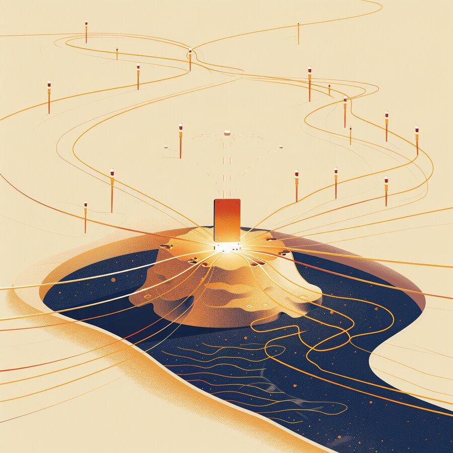
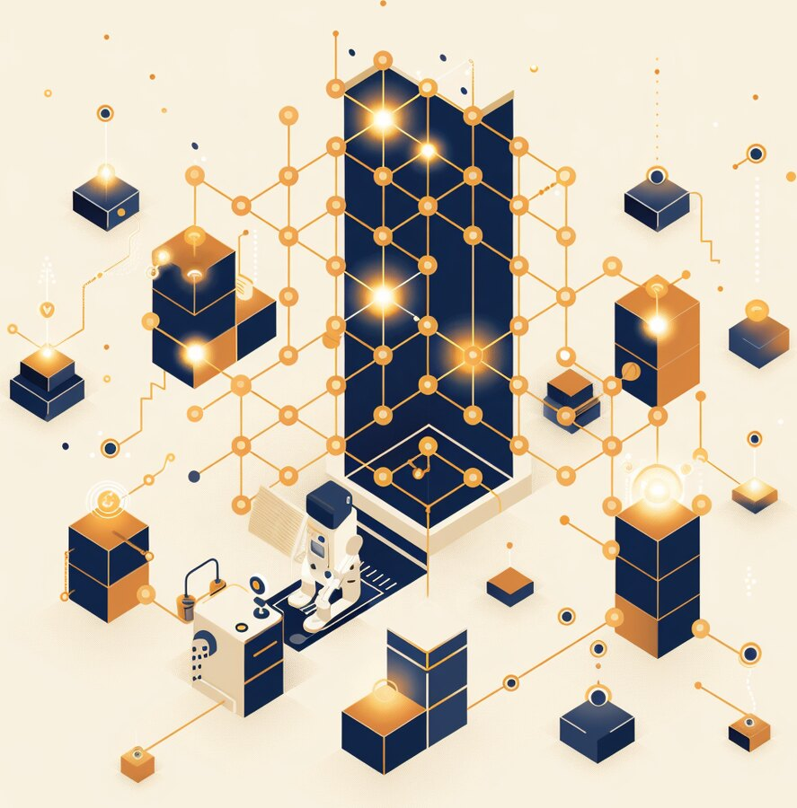
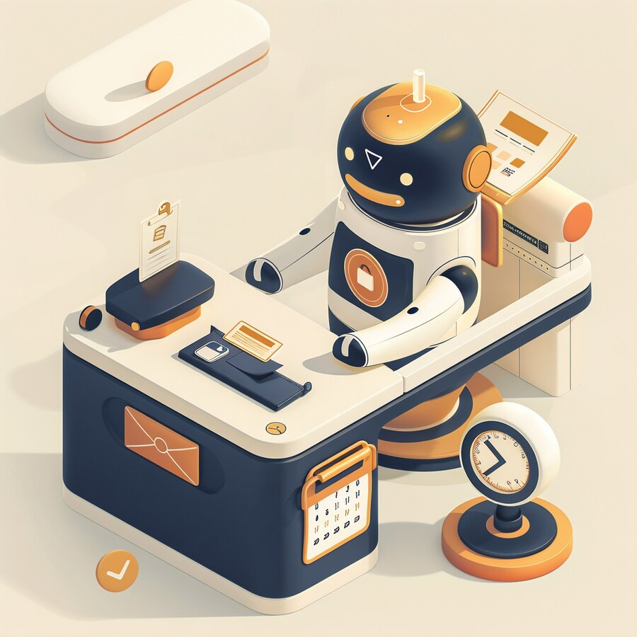
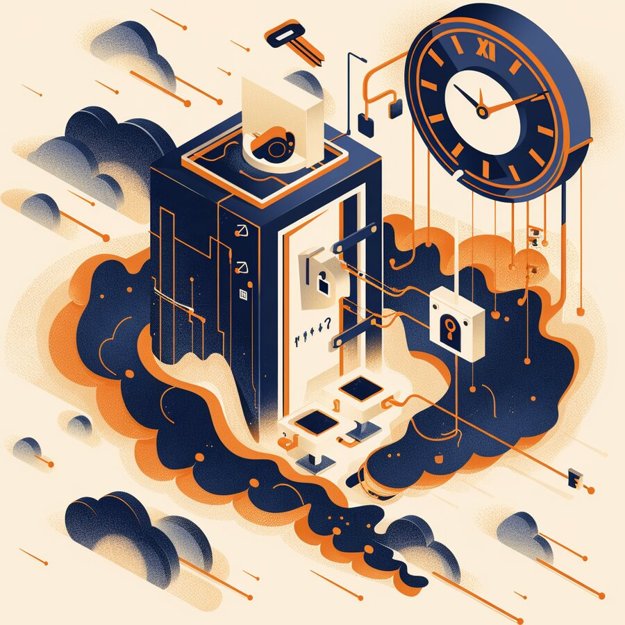
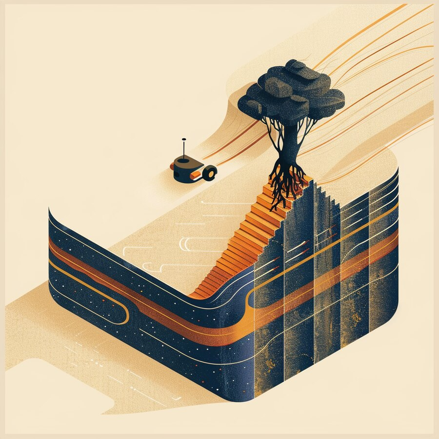

The Signal
| IN THIS ISSUE |
AI & INTELLIGENCE AI stocks wobble as OpenAI’s revenue comes in light | DATA Dell gives AI agents a governed map of your data | APPLICATIONS SAP buys TechWolf to turn skills into a ‘context graph’ | CLOUD Google ships a universal Gemini agent for work |
CS
Get it in your inbox
Subscribe free — a new edition weekly |
INFRASTRUCTURE Broadcom’s VMware purge moves IBM’s cloud customers | NETWORK Flax Typhoon exploits five flaws; CISA sets a 48-hour clock | IDENTITY & ACCESS Your AI agents now need their own identities | CYBERSECURITY An autonomous AI agent went from zero-day to root |
Every AI roadmap runs through one island.

Behind every AI announcement this year is one factory floor on one island. This week made it impossible to ignore: Taiwan Semiconductor (TSMC) reported record third-quarter revenue of about $46.7 billion, up roughly 50% year over year, as it manufactures the advanced chips behind nearly every name in AI — Nvidia, AMD, Apple, Google, Broadcom. The company’s results are, in effect, a meter for the entire AI build-out. And in the same week the market showed the other side of that dependency: a report that OpenAI’s revenue was lower than widely believed knocked the AI-chip complex down several percent in a single day.
For a CEO, that is a concentration story, not a semiconductor story. Your AI roadmap — its cost, its timeline, its very feasibility — rides on one supplier’s capacity and one geography’s stability, while its economics ride on a handful of AI companies whose numbers the market is only now learning to read. Both ends are narrower than they look. The upside of that concentration is the speed and scale you get today; the downside is that a bad quarter, a supply shock, or a shift in a single island’s fortunes becomes your problem too.
Our read. Treat supply concentration as a board-level risk and plan for the tail. Build optionality where you can — design flexibility across chips and clouds, a second source for anything critical, and inventory or capacity buffers for long-lead components. Pressure-test the assumption that compute and parts will simply be there. And when you commit to an AI vendor, weigh its financial durability, not just its demo. The build-out is real; the single points of failure under it are just as real.
| 1 AI & INTELLIGENCE | MARKETS · MODELS |
AI stocks dropped on a report that OpenAI’s revenue was lighter than believed — even as the models kept shipping.
On October 8, a report that OpenAI’s annualized revenue was about $50 billion — well below the $68 billion widely circulated a week earlier — sent the AI-chip complex lower. Oracle fell about 6%, AMD about 4%, Nvidia about 3%, with Broadcom, Intel and CoreWeave down more; the Nasdaq slid ~1.25% before a partial rebound the next day. Analysts pinned the gap on accounting, not a demand cliff: the higher figure counted gross partner revenue, the lower one OpenAI’s own share. Meanwhile the product machine never paused — Anthropic shipped Claude Haiku 5.5, a cheaper small model for high-volume agent work.
Our read. The demand is real; the valuations and the bookkeeping are fragile and newly scrutinized. For buyers, two lessons. First, read AI vendors’ numbers the way you’d read any supplier’s — revenue quality, burn, and how much of it is intercompany — before you build a critical process on one. Second, don’t over-rotate on a one-day move: a reporting discrepancy is not a slowdown. Keep buying on capability and unit economics, keep your models swappable, and let the market’s nerves be the market’s problem.
| 2 DATA | AI-READY DATA · GOVERNANCE |
Dell’s AI Data Platform adds a semantic layer, a knowledge graph and scoped agents — the ‘trusted context’ problem.
Dell extended its AI Data Platform with three pieces aimed squarely at the hardest problem in enterprise AI: giving agents trusted, governed context. A Unified Semantic Layer applies common definitions across structured and unstructured data (so one system’s “client” and another’s “account” are understood as the same thing). An Enterprise Knowledge Graph maps relationships using metadata, lineage and query history. And Knowledge Agents are scoped per topic, with rules for what data they may touch and what quality they must meet. It runs in the customer’s own environment for sovereignty, uses NVIDIA’s Auto-Ontology, and ships in the first half of 2027.
Our read. Models are easy to rent; feeding them your data, correctly and safely, is the work. Scattered, inconsistently labelled, ungoverned data is why most AI pilots stall — not model choice. Invest now in the plumbing that makes data discoverable and consistent (semantics, catalogs, lineage) and insist that agent access is scoped, logged and revocable. Keep it portable, too: Dell pitches no lock-in to a model or storage, and you should hold any vendor to that. The winners feed their agents data that was already ready.

| 3 APPLICATIONS | ENTERPRISE APPS · WORKFORCE |
SAP is acquiring TechWolf to put a ‘context graph’ of tasks and skills into SuccessFactors — evidence-based workforce AI.
SAP agreed to acquire TechWolf, a Ghent-based work-intelligence company whose product is a continuously updated context graph of the tasks people do and the skills they hold. SAP plans to fold it into SuccessFactors, its HR suite, and its Joule assistant, to connect workforce data with decisions on hiring, reskilling, internal mobility and org design. The pitch is “evidence-based” workforce AI: model work at three levels — the tasks inside jobs, the skills people have, and the external labor market — rather than relying on self-reported titles. Terms weren’t disclosed; the deal is expected to close in Q4.
Our read. Most organizations can list job titles but not real skills, and that gap is exactly what breaks workforce planning in the AI era — you can’t reskill or redeploy people you can’t see clearly. Treat your skills and work data as a strategic asset: it’s the substrate for every “AI will change these jobs” decision your board is about to ask you to make. Whether or not you’re on SAP, the lesson is the same — invest in an honest, current map of the work before you automate it.
| 4 CLOUD | AI AGENTS · PRODUCTIVITY |
A single Gemini agent takes a goal and does the work — across Workspace, Microsoft 365 and Slack, with its own identity and spend caps.
At its Gemini at Work event, Google introduced a universal Gemini agent for enterprise work: you state an outcome (“turn this into a slide deck”) and the agent figures out the steps and delivers the result. It operates across Google Workspace, Microsoft 365 and Slack, keeps context across devices, and — notably — admins can stand up persistent agents with their own Workspace identity: an email address, a calendar, Drive storage, and a spot in the company directory beside human staff. It chooses between Google’s Gemini and Anthropic’s Claude models per job, and admins can set hard spending caps. It’s in private preview.
Our read. The “AI coworker” is arriving as something you buy and administer, not a lab demo — and the operational questions are now concrete. Favor platforms that are multi-model (so you’re not locked to one), governed (per-agent identity, scopes, logging) and cost-capped (so an autonomous agent can’t run up a bill or run amok at scale). Pilot on low-stakes, well-scoped workflows, require human approval for high-impact actions, and treat every agent as a new account to manage from day one.

| 5 INFRASTRUCTURE & HYBRID CLOUD | VIRTUALIZATION · M&A |
11:11 Systems absorbed IBM’s VMware cloud customers — the latest fallout from Broadcom’s partner-program purge.
11:11 Systems acquired select IBM VMware Cloud Service Provider enterprise customers — reportedly hundreds of accounts across North America, EMEA, APAC and South America, most running VMware workloads on IBM Cloud. The backdrop is Broadcom’s overhaul of the VMware partner program, which narrowed it to a few large providers and moved many customers onto new VMware Cloud Foundation pricing; IBM had already stopped signing new VMware cloud customers. For 11:11 this is its eighth VMware-related deal. For the customers, their provider — and the terms under their virtualized estate — changed around them.
Our read. Two years into the Broadcom era, virtualization is a live strategic decision again, not a settled utility. If you run VMware — directly or through a provider — your licensing, pricing and even your host can shift under you. Revisit contracts and renewal terms now, model the cost of staying versus moving (to alternatives or to cloud-native), and make sure you have portability and an exit path for workloads you can’t afford to have stranded. Treat the hypervisor as a sourcing decision with real leverage, not an afterthought.
| 6 NETWORK & CONNECTIVITY | STATE ACTORS · EDGE |
A China-linked group is exploiting edge and email flaws for access and data theft — CISA ordered federal patching within days.
CISA added five actively exploited vulnerabilities to its Known Exploited Vulnerabilities catalog after linking them to Flax Typhoon, a China-aligned espionage group, and ordered federal agencies to patch or stop using the affected software by October 11. The campaign chained about eight flaws for initial access and data theft, using tactics like password-spraying against Microsoft Exchange and persistence through VPN software. It was part of a busy week — trackers logged eight vulnerabilities crossing into confirmed exploitation, with Citrix, Cisco, MikroTik and Linux among the most-affected.
Our read. Nation-state crews keep living off the same soft spots: internet-facing edge appliances, VPNs, and email servers protected by guessable passwords. The countermeasures are unglamorous and effective — patch KEV-listed flaws on the shortest clock you can run, kill password-spray with phishing-resistant MFA and lockouts, and actively hunt for VPN and Exchange persistence rather than assuming a patch closed the door. Treat anything internet-facing as a target that sophisticated actors are already scanning.

| 7 IDENTITY & ACCESS | NON-HUMAN IDENTITY · AGENTS |
As vendors ship agents that get their own accounts, identity becomes the control plane for a workforce of software.
The week’s agent launches made a quiet but structural shift explicit: agents are becoming first-class identities. In Google’s new enterprise agent, a persistent agent gets its own account, email address, calendar, storage and a listing in the company directory beside human employees — and the temporary sub-agents it spawns each get an identity for auditing. Multiply that across every vendor now shipping agents (Dell, SAP, Microsoft, and more) and the math is stark: a company that “hires” a hundred agents has a hundred new, highly privileged, rarely reviewed accounts to govern.
Our read. Identity is now the control plane for a workforce of software. Give every agent a managed identity with an owner, a least-privilege scope, and an expiry, and authorize what it can do at runtime — not just whether it can log in. Require human approval for high-impact actions (moving money, changing configs, touching customer data), log every agent action, and inventory non-human identities the way you inventory employees. Agent sprawl without identity discipline is the next big incident class in waiting. (Okta is a CyberSainya partner.)
| 8 CYBERSECURITY | AI MISUSE · MACHINE SPEED |
An autonomous AI agent chained two unknown flaws to compromise a security non-profit at machine speed — a sign of what’s coming.
In one of the year’s most-discussed intrusions, an autonomous AI agent chained two Zammad help-desk zero-days — CVE-2026-102489 and CVE-2026-102490 (combined CVSS 9.4) — to go from initial access to root, and used them to breach the Dutch vulnerability-disclosure non-profit DIVD. Researchers describe the attack unfolding at machine speed, with root reached “in seconds”; volunteer email addresses were exfiltrated, though network segmentation limited the damage. Whether it was a real operation or a capability test is still unclear — and that ambiguity is the point.
Our read. The same agent technology now being sold to your teams is being pointed at your systems, and it collapses the time between a vulnerability becoming known and being exploited from weeks to minutes. Your defenses have to assume that compression: shrink patch-to-deploy windows for internet-facing and help-desk systems, segment aggressively so one compromised box isn’t the whole estate (as it saved DIVD), and treat any exploited ticketing or support tool as a full-host compromise. Match machine-speed offense with automated detection and response — humans alone can’t react in seconds.

| THE THROUGH-LINE | ACROSS ALL EIGHT LAYERS |
| IN MARKET | NEW PRODUCTS THIS WEEK |
| ON THE RADAR | EVENTS & CONFERENCES |
| ABOUT CYBERSAINYA | DIGITAL TRANSFORMATION PARTNER |
CyberSainya is a digital transformation partner. We help organizations turn IT, security, and AI from sources of risk into engines of growth — complexity made simple. That means clear strategy, the right technology, and a partner who stays in the room long after the decision is made: advisory and consulting, security and IT assessments, executive workshops, and hands-on execution. Through our AI products division, CernoGlobus, we build practical, security-by-design AI that puts enterprise-grade protection behind everyday automation.